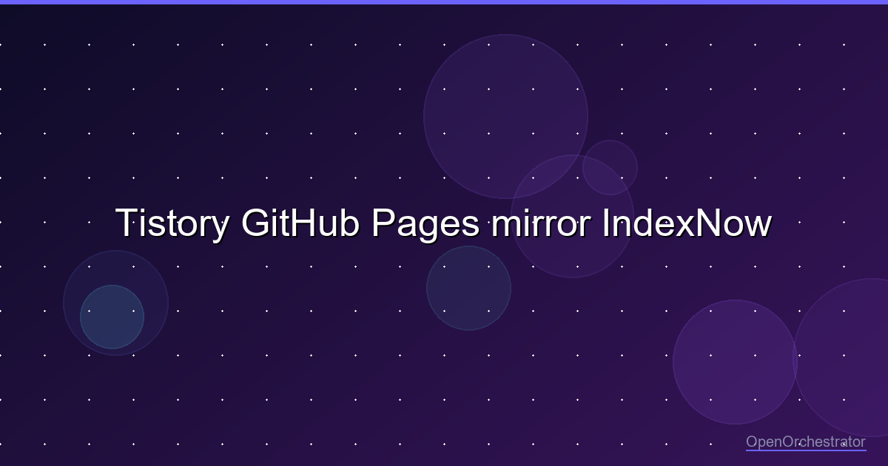

Tistory 글을 검색엔진에 자동으로 발견시키는 법 — GitHub Pages mirror와 IndexNow

OpenOrchestrator 시리즈 7편 | 2026.05
글은 발행 버튼을 누르는 순간 끝나는 줄 알았다. 그런데 실제로 자동 블로그 파이프라인을 만들다 보니, 발행은 절반이었다.
사람은 글 주소를 직접 열어볼 수 있다. 하지만 검색엔진은 다르다. 새 글이 생겼다는 신호를 찾고, sitemap을 읽고, feed를 확인하고, 같은 글이 여러 주소에 있을 때 어느 쪽을 원본으로 볼지 판단한다. 이 과정이 느슨하면 글은 공개되어 있어도 검색엔진 입장에서는 한동안 없는 글처럼 남을 수 있다.
이번 글은 그 문제를 어떻게 정리했는지에 대한 기록이다. 핵심은 단순하다.
- Tistory는 사람이 읽는 원본으로 둔다.
- GitHub Pages는 검색엔진이 읽기 쉬운 공개 mirror로 둔다.
- 발행 직후 sitemap, RSS, IndexNow 신호를 자동으로 갱신한다.
다만 먼저 선을 긋고 시작하자. 이 글은 운영 구조를 설명하지만, 내부 repository 이름, token 이름, 검증 파일의 실제 값, credential 처리 방식은 공개하지 않는다. 검색엔진 발견성을 높이는 설계와, 공개하면 안 되는 운영 세부 정보는 분리되어야 한다.
문제는 색인이 아니라 발견이었다
블로그 글을 발행하면 자연스럽게 이런 기대를 하게 된다.
“공개 글이니까 Google, Bing, Naver가 알아서 가져가겠지.”
언젠가는 그럴 수 있다. 하지만 자동화 시스템에서 “언젠가”는 애매한 상태다. 글을 썼고, 공개했고, 링크도 열리는데 검색엔진이 언제 발견할지는 플랫폼의 크롤링 주기에 맡겨져 있다.
내가 원한 것은 검색 순위를 조작하거나 색인을 강제로 보장하는 일이 아니었다. 그건 검색엔진이 결정할 일이다. 대신 내가 통제할 수 있는 것은 분명했다.
| 통제할 수 있는 것 | 의미 |
|---|---|
| 공개 URL | 검색엔진이 접근 가능한 주소 |
| sitemap | 공개 글 목록을 명확히 알려주는 파일 |
| RSS feed | 최신 글이 추가됐다는 신호 |
| canonical | 원본 URL이 어디인지 알려주는 힌트 |
| IndexNow | 변경된 URL을 검색엔진에 알리는 요청 |
그래서 목표를 “검색 결과에 즉시 나오게 만들기”가 아니라 “검색엔진이 발견하지 못할 이유를 줄이기”로 잡았다. 이 차이가 중요했다.
Tistory는 원본으로 남긴다
OO 기술 블로그의 원본은 Tistory다. 한국 검색 노출, 기존 블로그 운영, 독자 경험을 생각하면 Tistory를 굳이 버릴 이유가 없었다.
대신 Tistory가 모든 검색 제어 기능을 떠맡게 하지는 않았다. 블로그 플랫폼은 글을 쓰고 읽히는 데는 좋지만, 검색엔진용 루트 파일을 안정적으로 배치하거나 배포 파이프라인으로 다루기에는 제약이 있다.
그래서 역할을 나눴다.
Tistory
- 사람이 읽는 원본 글
- 댓글, 카테고리, 기존 블로그 경험 유지
- canonical 기준 URL
GitHub Pages mirror
- 검색엔진이 읽기 쉬운 보조 표면
- sitemap, RSS, robots, verification 파일 제공
- 발행 파이프라인에서 자동 갱신
여기서 mirror는 원본 행세를 하지 않는다. mirror 페이지는 Tistory 원문을 canonical로 가리킨다. 검색엔진에게 “이쪽은 발견을 돕는 보조 페이지이고, 원본은 Tistory 글”이라고 알려주는 구조다.
왜 mirror가 필요한가
Tistory 글 자체는 공개되어 있다. 그런데 검색엔진 discoverability를 자동화하려면 글 본문 외에도 여러 신호가 필요하다.
- 새 글 URL이 sitemap에 들어가야 한다.
- RSS feed에 최신 글이 반영되어야 한다.
- robots.txt가 sitemap 위치를 알려줘야 한다.
- 검색엔진 소유권 검증 파일이 배포 중 사라지면 안 된다.
- 변경된 URL 목록을 IndexNow로 제출할 수 있어야 한다.
GitHub Pages는 이런 정적 파일을 다루기에 좋다. 파일을 생성하고, 검증 파일을 보존하고, 배포 후 검색엔진에 알리는 흐름을 CI로 묶을 수 있다.
결과적으로 Tistory는 원본 경험을 담당하고, GitHub Pages는 검색엔진과 대화하는 공개 표면이 된다. 독자가 볼 때는 Tistory가 중심이고, 시스템 관점에서는 mirror가 발견성을 보조한다.
발행 후 자동으로 바뀌는 것
현재 발행 흐름은 이렇게 정리된다.
초안 작성
-> Tistory 공개 발행
-> 공개 URL 기록
-> GitHub Pages mirror 재생성
-> sitemap / RSS / robots 갱신
-> IndexNow 제출
이 흐름에서 중요한 것은 “발행 이후”다. 글이 올라간 뒤에 mirror, sitemap, feed가 함께 갱신되지 않으면 검색엔진이 보는 공개 표면은 낡은 상태로 남는다.
특히 canonical URL은 반드시 정확해야 한다. 같은 글이 Tistory와 mirror 양쪽에 있을 때 canonical이 없다면 검색엔진은 두 페이지를 중복 콘텐츠로 볼 수 있다. 그래서 mirror는 자기 자신을 원본이라고 주장하지 않고, Tistory 원문을 원본으로 가리킨다.
IndexNow가 해주는 일과 못 해주는 일
IndexNow는 “이 URL들이 새로 생겼거나 바뀌었으니 확인해 달라”고 검색엔진에 알려주는 프로토콜이다. Bing 계열과 Naver Search Advisor 쪽에 변경 신호를 보낼 수 있다.
다만 IndexNow는 색인 보장 버튼이 아니다. 요청이 성공했다고 해서 검색 결과에 바로 뜬다는 뜻은 아니다. 이 점은 공개 글에서도 분명히 말해야 한다.
정리하면 이렇다.
| 항목 | 가능 여부 |
|---|---|
| 새 URL을 검색엔진에 알리기 | 가능 |
| sitemap과 feed를 최신 상태로 유지 | 가능 |
| 검색엔진 소유권 검증 파일 보존 | 가능 |
| 검색 결과 노출 시점 보장 | 불가능 |
| 검색 순위 보장 | 불가능 |
자동화가 책임질 수 있는 것은 입력 신호다. 결과 판단은 검색엔진의 영역이다.
운영하면서 조심한 것
이 작업에서 의외로 중요했던 부분은 보안과 공개 범위였다.
검색엔진 연동을 자동화하려면 배포 권한, 검증 파일, 제출 키 같은 운영 요소가 등장한다. 하지만 기술 블로그에 그 세부값을 그대로 적을 필요는 없다. 독자에게 필요한 것은 “어떤 설계 판단을 했는가”이지, 내 저장소와 credential 구조의 세부 정보가 아니다.
그래서 공개 글에서는 다음 원칙을 둔다.
- token이나 secret의 실제 이름은 쓰지 않는다.
- private 저장소 이름과 권한 구조는 자세히 쓰지 않는다.
- 검증 파일의 실제 값은 공개 예시로 넣지 않는다.
- 실패 로그는 원문보다 원인과 해결 방향만 설명한다.
- 내부 명령어는 필요한 경우에도 추상화해서 설명한다.
이 기준을 지키면 글은 여전히 기술적으로 유용하면서도, 운영 정보를 불필요하게 드러내지 않는다.
Before vs After
이전에는 글 발행과 검색엔진 발견 사이에 사람이 끼어 있었다.
| 항목 | 이전 | 이후 |
|---|---|---|
| Tistory 발행 | 자동화 가능 | 자동화 유지 |
| mirror page | 없음 | 자동 생성 |
| sitemap / RSS | 플랫폼 기본값 의존 | 발행 후 자동 갱신 |
| 검색엔진 알림 | 수동 확인 | IndexNow 자동 제출 |
| 원본 표시 | 명확하지 않음 | Tistory canonical 유지 |
| 검증 파일 | 수동 관리 | 배포 중 보존 |
가장 큰 변화는 “기다림”에서 “알림”으로 바뀐 것이다. 글을 올린 뒤 검색엔진이 언젠가 찾아오길 기다리는 대신, 새 글이 생겼다는 신호를 바로 정리해서 보낸다.
정리
이번 작업의 결론은 간단하다.
블로그 자동화의 끝은 “글이 발행됐다”가 아니다. 글이 공개되고, 원본 URL이 기록되고, mirror가 갱신되고, sitemap과 RSS가 최신 상태가 되고, 검색엔진에 변경 신호가 전달되는 지점까지가 한 바퀴다.
물론 이것이 완전 자동 색인을 의미하지는 않는다. 검색엔진이 언제, 어떻게 색인할지는 여전히 검색엔진의 판단이다. 하지만 적어도 시스템이 할 수 있는 준비는 자동으로 끝낼 수 있다.
OO 생태계의 북극성은 완전자율주행이다. 콘텐츠 파이프라인에서도 마찬가지다. 글을 쓰는 자동화보다 중요한 것은, 글이 공개된 뒤 독자와 검색엔진이 자연스럽게 발견할 수 있는 상태까지 책임지는 것이다.